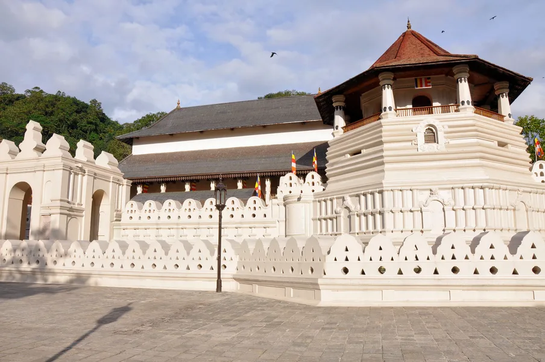

Kandy, Sri Lanka's Sacred City, is found in the heart of the Hill Country. It dates back to the 14th century. It was even the capital of the country until 1815. The Temple of the Tooth is the most noteworthy attraction in Kandy today. According to stories, a tooth of Buddha is stored here. In the 6th century BC, the tooth is reported to have been preserved from his funeral pyre. It was later transported to Sri Lanka, where it was kept safe for generations. According to legend, the original tooth was shipped to Goa by the Portuguese in the 16th century, and the one displayed in the museum is the replica. Overall, Kandy is a very popular and crowded Buddhist pilgrimage centre in Asia.
Kandy was called Senkadagalapura back then and was established by King Wickramabahu III during the period of his reign from 1357-1374 CE. The present name Kandy is an anglicized version of 'Kanda Uda Rata' which means 'the country of mountains' and this was coined in the colonial era. When Senasammata Wickremabahu, the son of King Wickramabahu III, ascended the kingdom in the 15th century (1473-1511), the Kandyan Kingdom became the new capital. He was succeeded by his son, King Jayaweera Astan (1511-1551), and then by Karalliyadde Bandara (1551-1581). His successor, on the other hand, wanted to dominate the hill nation from Sitawaka on the hills' western sides. Konappu Bandara, who became known as Wimaladharmasuriya I, ascended to the throne after a period of power struggle. Wimaladharmasuriya I, who had embraced Buddhism, reinforced his power by bringing the Lord Buddha's tooth relic to Kandy. He then advanced to build a temple for the relic, which evolved into the current Dalada Maligawa. The Kandyan kingdom was controlled by seven successive kings between the death of Wimaladhramasuriya I in 1604 and the British capture of the last King of Kandy in 1815. During the reign of the last King Sri Wickrema Rajasinghe, who was exiled to South India by the British, The majestic Octagon at the Dalada Maligawa and the gorgeous Kandy Lake were built.
One of the popular sites in the city of Kandy is the Dalada Maligawa, also called as, the Temple of the Tooth. Surrounded by the lake and the commercial district it is located in the heart of Kandy town.The Maligawa was previously a royal palace where the monarch and his consorts lived, but after the Kandyan Kingdom fell apart, the palace was converted into a Buddhist temple housing Buddha's tooth It is a most visited destination for all visitors. Visitors can observe Buddhist rites, visit the museum, which has various old items, and pay their respects to the tooth relic during one of the Buddhist ceremonies held on the premises. The Dalada Maligawa will amaze you with its architectural grandeur and historical significance. The Aluth Maligawa, Audience Hall, and the World Buddhism Museum are all worth taking a look.

In between the Dalada Maligawa and the Vishnu Temple in Kandy lies the Royal palace of the Kandyan Kingdom which is also known as the "Mahawasala". The last king to reside in it was King Sri Wickrama Rajasinghe (1798-1815). The Royal Palace can be accessed from the area near to Vishnu Temple by anyone who wants to drop in. The Palace Complex originally consisted of King's Palace, Queens's Palace, Royal Audience Hall, King's Harem chambers, Queen's Bathing Pavillion and the Building of Temple of the Tooth Relic. But today the remains of the residence of the Last king of Kandy [1762 A.D.] is what can be seen of the Royal palace. Not to mention this is also home to many Kandyan wood carvings.
